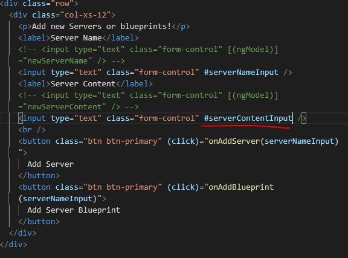
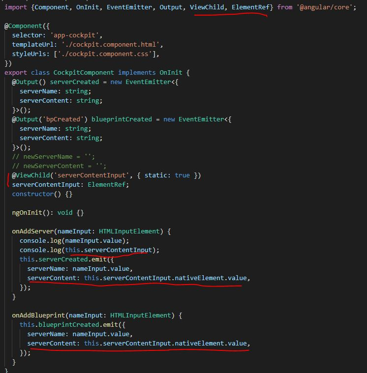

11 - View Child
Like using a local reference, but gaining access to the information before the event, in this case before the button click. And instead of passing the local reference in the HTML through an event(click). The reference is passed through a new YS property serverContentInput
Below, local reference #serverContentInput is added the in form input for content field.
Then, below, in the TS, ViewChild and ElementRef must be imported
Property serverContentInput is created with a @ViewChild decorator. 'serverContentInput' is passed through and this is the connection to the HTML local reference of #serverContentInput. The type is also indicated as ElementRef because when doing the console log below, unlike local references console log where the HTML element in full is logged, there will be an Angular element reference.
In the onAdd functions for serverContent the serverContentInput reference is used with nativeElement is used to get access to the underlying element(the form field) and then the value of that underlying element.
